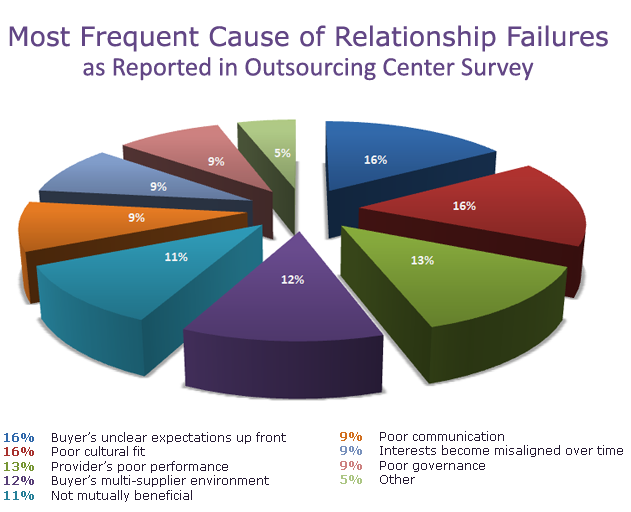

Why NetCloud?
At NetCloud, the traditional outsourcing model has been enhanced to enable our client partners to experience higher control while retaining a dramatic positive P&L impact. This new sourcing model is asset light, comprehensive and collaborative. At NetCloud, we refer to our service deployment model as “Full Service Co-Sourcing”. Rather than just being a nice marketing term, let’s explain what this means to our client/partners and prospects. First, a little background into outsourcing versus co-sourcing is appropriate.
NetCloud. Full Service Co-Sourcing versus Outsourcing
Corporate and IT leaders today have complex challenges of working on multi-dimensional strategies to ensure IT solutions deliver mission critical value while managing risk, compliance, architecture and ever changing technologies. These challenges are complicated and often lead to distraction from the core business imperatives, particularly in emerging companies.
Consequently, many companies either investigated or committed their IT resources to outsourcers. But why has outsourcing failed in so many companies? The results of an extensive study conducted by the Outsourcing Center are summarized in the chart below.

Although the reasons are plentiful, the largest causes of failure can be traced to the following: communications problems between the outsourcer and the client; poor cultural match between the companies; and lack of understanding between the parties and cost/performance. For these reasons and others, NetCloud creates strong working relationships with its clients based on face to face relationships rather than some form of remote management, often across multiple time zones. The goal of co-sourcing, as implemented by NetCloud is more ambitious.
NetCloud ’s Full Service Co-Sourcing of Information Technology is designed to create a more robust and efficient IT function by partnering with clients to offer the most optimal level of economic benefit and technical performance. Although almost all of the IT systems are hosted at the NetCloud service center, some local computing capability such as the print server remains on the client’s site. Client / partners who form co-sourcing partnerships with NetCloud are able to rely on our IT hosting expertise, consulting capabilities and highly skilled staff to provide additional resources that can be applied in a flexible manner across the full scope of the IT function.
Since NetCloud offers a packaged set of IT services that most small, medium and emerging companies typically require, the transition to the NetCloud service center is a simple process that doesn’t require significant management time and attention. The NetCloud technical team has years of experience in migrating customer data into service centers. In terms of cost, our monthly hosting cost can be as little as one-half the monthly cost of an IT senior employee including all hardware, software, licensing & maintenance.
Conclusion and Next Step
Our approach is not about “winning the deal” but establishing long-term mutually beneficial service relationships. If you are interested in taking the next steps toward improving the performance and cost-effectiveness, both present and future, of your information technology resources, please call us at (408) 889-3820.
|